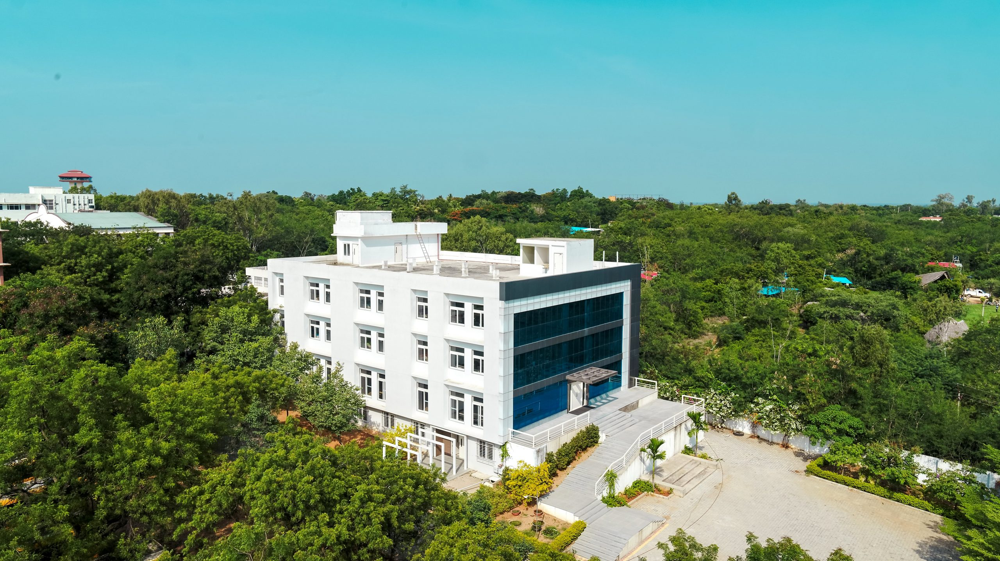

ABOUT R&E

-
To enhance research activities and cultivate pleasant research
atmosphere, a multi-crore state of the art building with all modern
technical facilities was established in the year 2018. It accommodates
all departments to carry out advanced research, establish incubation
cells and start-ups.
-
The R&E Hub, with its State-of-the-Art Infrastructure, helps to promote
Research and Innovations amongst the Faculty and Students by identifying
new Research Areas, developing Projects leading to Publications,
Products, Innovations and Start-Ups. All research activities are being
streamlined to make a mark in ‘Make in India’ concept of Indian
Government.
-
It has two main wings namely Research and Development (R&D) Centre and
Innovation and Incubation Centre (IIC).
-
The institution has been actively involved in multidisciplinary areas of
research and promotes engagement with industries through consultancy
services. The research and consultancy activities are being taken up by
the dynamic and experienced members of the institution. Young and
enthusiastic minds of under graduate, post graduate and Ph.D students
actively participate in all these activities. The institution is keen to
foster the development of research in the diverse area of sciences,
technology and management and create a wealth of human resources in
specified fields.